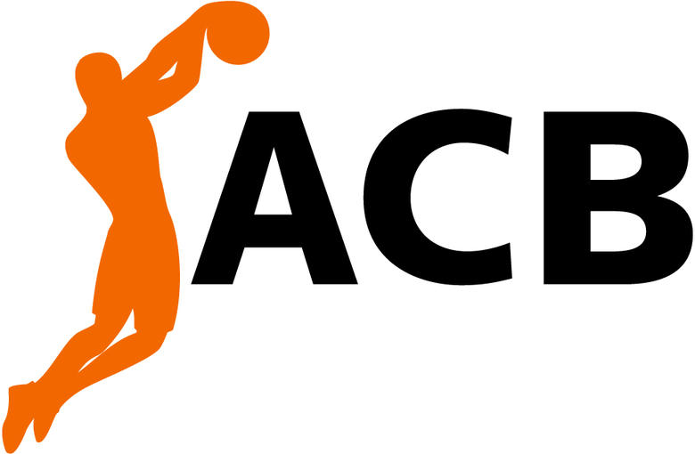
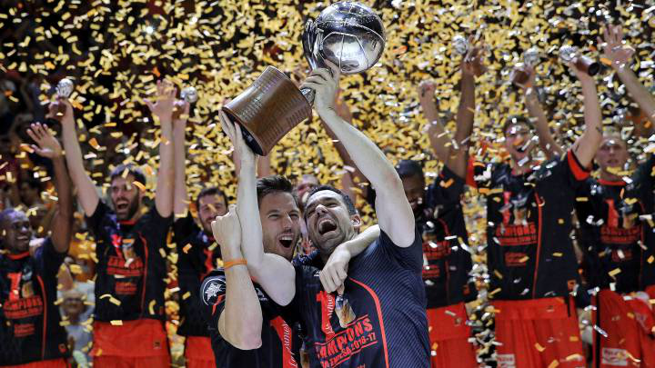

Las ligas son competiciones formales en las que los equipos compiten para llegar a ser el número uno. Cada liga tiene sus propias reglas y premios. Las ligas de baloncesto son fundamentales para el desarrollo y promoción del deporte, proporcionando una estructura competitiva para los equipos y jugadores. Además, ofrecen visibilidad a los jugadores, permitiéndoles mostrar su talento y habilidades ante una audiencia más amplia. Los premios incluyen títulos de campeonato, reconocimiento y, en algunos casos, ascensos a ligas superiores. Estar en una liga implica competir al más alto nivel y enfrentarse a rivales talentosos, contribuyendo al crecimiento del baloncesto en el país. 🏀🌟
Liga ACB: Es la máxima categoría del baloncesto español. Está compuesta por 18 equipos y es organizada por la Asociación de Clubes de Baloncesto (ACB). Los equipos compiten a nivel nacional y se disputan el título de campeón de la Liga ACB.
 
Noticia del Valencia Basket en la Liga ACB España: Ver noticia
Euroleague: Es como la versión de baloncesto de la Champions League de fútbol, pero aquí los 18 equipos participantes son seleccionados por invitación. La primera temporada comenzó en 1957 y desde entonces las mejores quintetas europeas han participado en este torneo que ha cambiado de nombre en diversas ocasiones. El actual campeón es el CSKA de Moscú, pero el equipo más ganador es el Real Madrid.
Eurocup: La EuroCup es una liga de básquet europea en la que participan equipos de varios países europeos. La competición consta de varias fases, incluyendo la fase de grupos, los playoffs y la final. El objetivo es ganar el título de la EuroCup, lo que permite a los equipos mostrar su talento en el escenario europeo.
Liga BSL Turca: El Basquetbol comenzó en Turquía en 1904, pero la liga continuó hasta 1966. Actualmente participan 16 equipos, siendo el Anadolu Efes Sport Kulübü el más exitoso con 9 títulos. El Fenerbahce es el segundo mejor con 9 títulos. A pesar del aumento de recursos, la liga ha experimentado un declive debido al aumento de las competiciones.
Basketball Bundesliga: La liga alemana se fundó en 1939, pero se detuvo por la Segunda Guerra Mundial. Retomó actividades en 1947 y es profesional desde el 66. Se dice que esta liga está muy bien manejada tanto en publicidad como en desarrollo deportivo. Aquí, el máximo ganador es el Bayern Leverkusen con 14 títulos y le sigue el Borse Baskets con 9. Un equipo que ha ido ganando fama es el Alba Berlín que ya tiene 8 campeonatos de los cuales 7 fueron consecutivos.
 https://www.bundesliga.com/es/bundesliga
https://www.bundesliga.com/es/bundesliga
Otras ligas importantes en el mundo son: